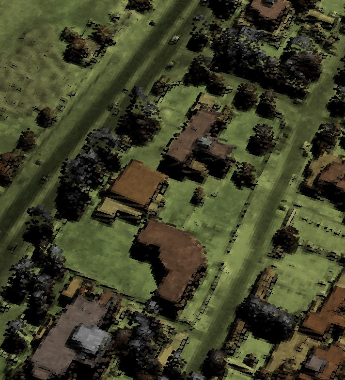
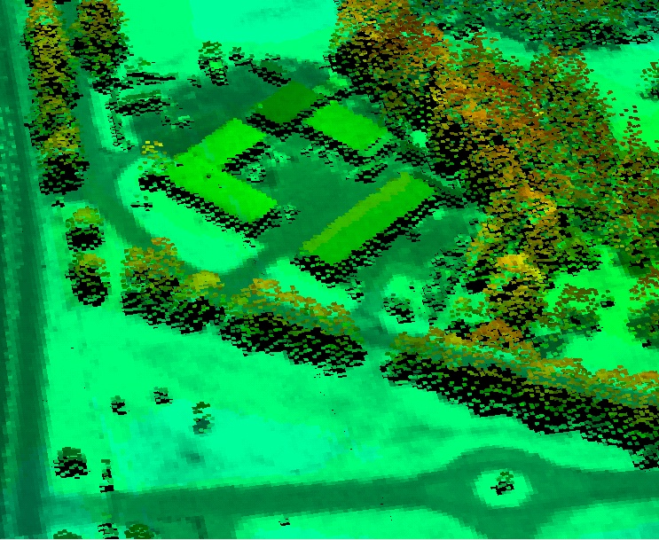
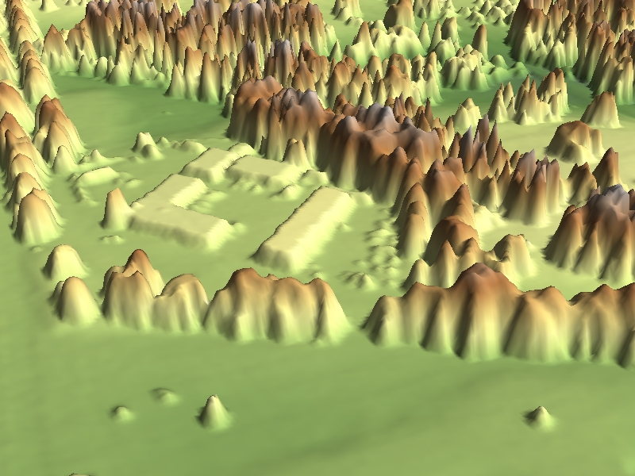

3D MAP RENDERING TECHNIQUES
The 3D Fusion Viewer uses a technique for visualizing lidar maps that is unique among the myriad of other viewers being used.
This technique is described elsewhere in the users manual and in a symposium paper.
Below is a comparison with two common viewers:
COMPARISON WITH QUICK TERRAIN MODELER
Fusion3D

Quick Terrain Modeler

COMPARISON WITH RTV_3DEM
Fusion3D

RTV_3DEM
